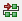

To program the FPGA device with the bitstream, do the following:
- Select Xilinx Tools > Program FPGA. Alternatively, click the Program FPGA
button

. - In the Bitstream and BMM File fields are automatically populated based on the specified hardware platform. These settings can be overridden. If necessary, specify the bitstream (.bit) and Block RAM Memory Map (.bmm) files to program the device.
- SDK automatically detects the processors in the system and shows them in a table at the bottom of the window. Under Software Configuration, select the executable (.elf) file to initialize at the reset start address for each processor. This is the program the processor will start executing when it comes out of reset. From the drop-down list, you can select BootLoop or Browse to any other ELF file.
- Click Program.
- SDK programs the device using the settings you specified. Depending on the size of the device
and the JTAG cable frequency, programming could take longer than expected.